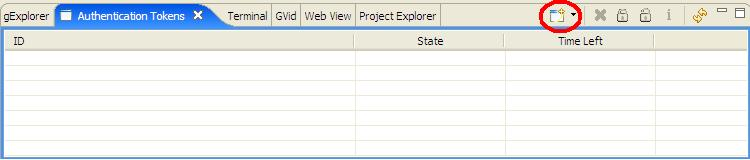
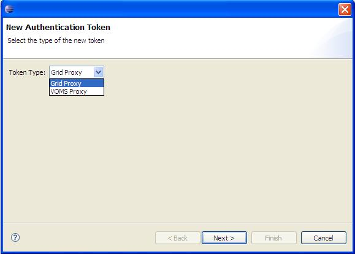
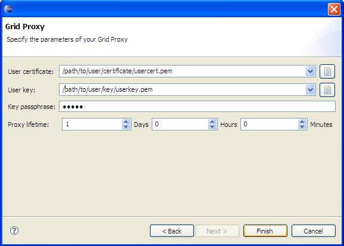
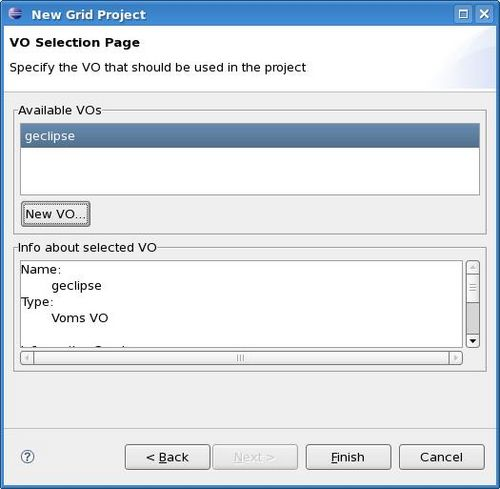

g-Eclipse - Authentication Tokens
To create an authentication token, first select the
 Authentication Tokens
view from the lower part of the Eclipse window. Then click on the
New icon in
the top right of this view
Authentication Tokens
view from the lower part of the Eclipse window. Then click on the
New icon in
the top right of this view

and you will be presented with the following window.

You may choose to create a Grid proxy or a
VOMS proxy for the token type.
Grid proxy
Click Next and you will be presented with the following dialog box.

Specify the locations of the user certificate, the user key and enter the key passphrase.
By default your proxy will be valid for one day from activation. You may change this by specifying a
different proxy lifetime. Finally, pressing Finish will validate your proxy and it will appear as an entry
in the Authentication Tokens view. To activate this token press the Activate button (shaped like a padlock)
at the top right of this view.
VOMS proxy
When you choose to create a VOMS Proxy and click Next, you will be presented with a dialog similar to the
following.

Choose the VO for which you wish to create the proxy and click Next. Specify the locations of the
user certificate, the user key and enter the key passphrase as mentioned above. Pressing Finish
will validate your proxy and it will appear as an entry in the Authentication Tokens view. Activate this token
by pressing the Activate button (shaped like a padlock) at the top right of this view.
Note on creating authentication tokens:
If you decide to submit a new
job without first creating your authentication token, you will be
notified and the application will offer to create one for you. Accepting this
will take you directly to the proxy creation dialog where you can create the token.
The new job will be started only after successful creation of your token.
Back to Getting Started
Continue to Create a new Grid Project